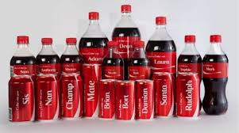

Recent News Recommended to Read
Pay at least one-month's salary': Jet Airways' employees request govt
Why only 54% of Bengaluru turned up to vote
Popular News Recommended to Read

HT had report previous studies that detected heavy metals such as nickel, manganese, lead and mercury in the soil and water of the floodplains and vegetables grown in the area.
The Yamuna pollution monitoring committee, appointed by the National Green Tribunal (NGT), has ordered studies to check whether vegetables grown in the Yamuna floodplains are contaminated by heavy metals and pesticides.
The committee directed the Central Pollution Control Board (CPCB) and the National Environmental Engineering Research Institute (NEERI) to conduct the studies, citing a February 4 HT report titled “Drive to dissuade farming on ‘toxic’ Yamuna floodplains”.
HT had report previous studies that detected heavy metals such as nickel, manganese, lead and mercury in the soil and water of the floodplains and vegetables grown in the area.
But the Indian Agriculture Research Institute (IARI), in multiple reports, held that the concentration of pesticides in vegetables was within safe limits.
Farmers said they were using groundwater and not the polluted river water for irrigation. Experts had said not all groundwater from the floodplains was contaminated.
“In the light of the above reports and considering that the presence of heavy metals and pesticides in food crops, vegetables or even fodder can be a serious health hazard, the monitoring committee would like NEERI as well as CPCB to carry out independent testing of samples drawn at random from different sale points on the roads and bridges along the Yamuna and test the samples so collected for the presence of heavy metals and pesticides,” a letter sent by the NGT committee to CPCB and NEERI said.HT has seen the letter.
The Delhi government had planned to launch an awareness campaign asking citizens not to eat vegetables grown on the riverbank because they contain toxins. This was announced after a meeting on December 24 between the Delhi government and the two-member monitoring committee. The NGT had banned cultivation of vegetables on the floodplains in 2015.
“We have already started the study... The study would take another one-and-a-half months to complete,” said Sanjeev Goyal, director of NEER’s Delhi zonal centre.
“It is a welcome decision because not all vegetables grown on the floodplains could be tagged as contaminated,” said Manoj Misra, convener of the Yamuna Jiye Abhiyan, a group of non-government organisations and individuals working for the conservation of the river system.